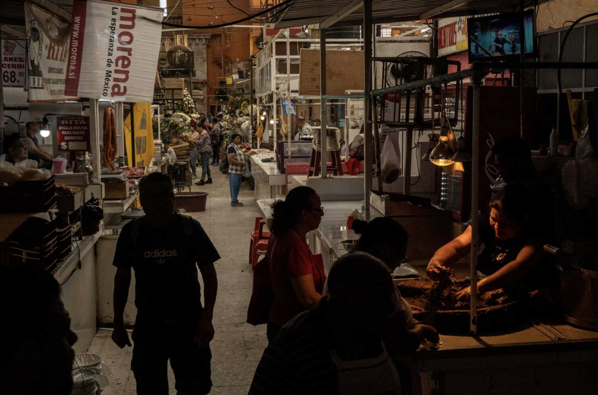
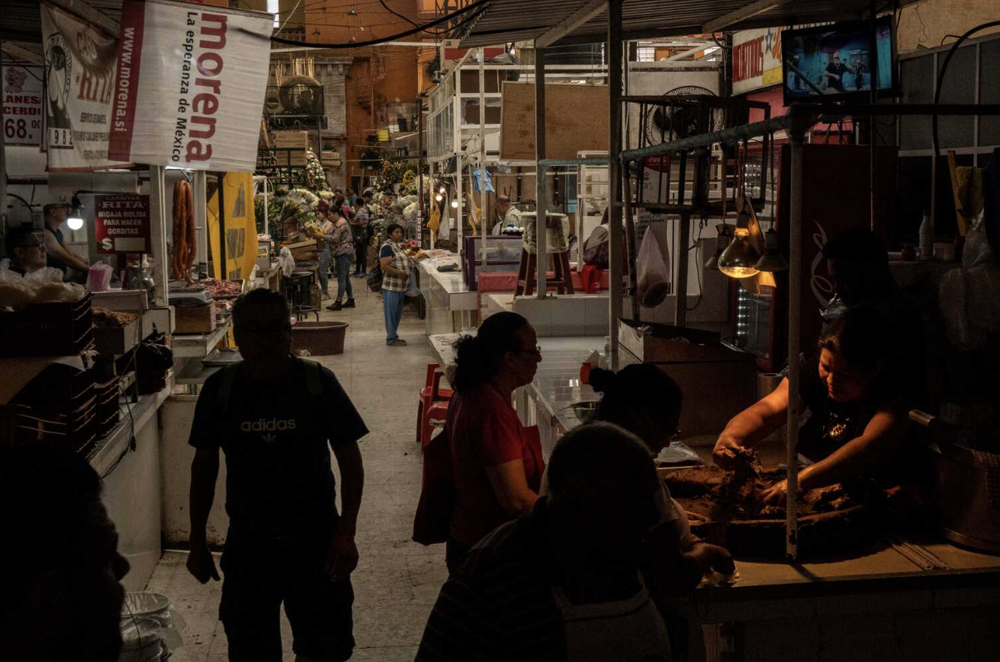

u.s.
international
Canada
español
The New York Times
Jueves, 2 de octubre de 2025
Síguenos: FacebookWhatsApp
Mundo
estados unidos
America latina
Negocios
ciencia y tecnologia
cultura
Estilos de vida
opinion
Deportes
Venezuela, Estados Unidos y el espectro del cambio de régimen
En esta primera edición del boletín The World, exploramos por qué un presidente que hizo campaña contra las
guerras extranjeras” está enviando buques de guerra a Venezuela.
Suscribirse a El Times.
Suscríbete para recibir por correo el boletín gratuito de
The New York Times en español.
 
